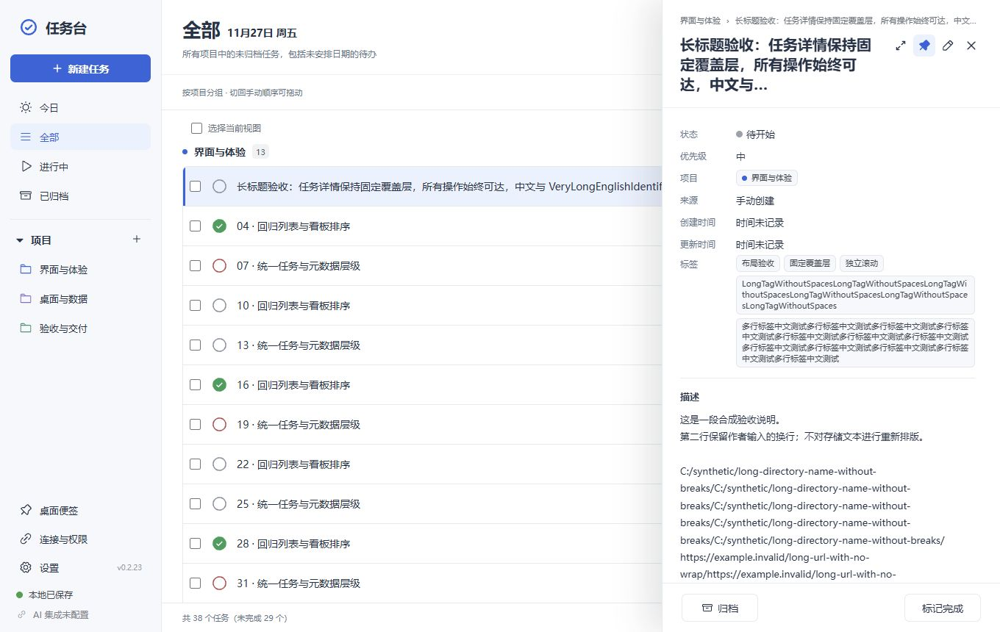
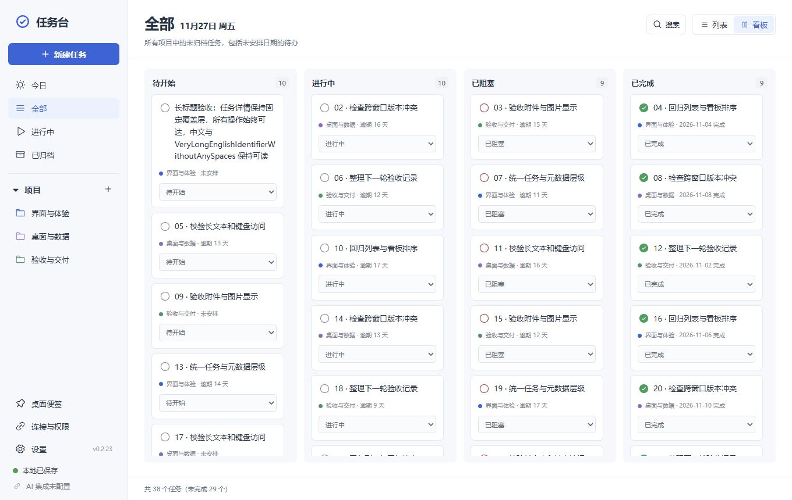
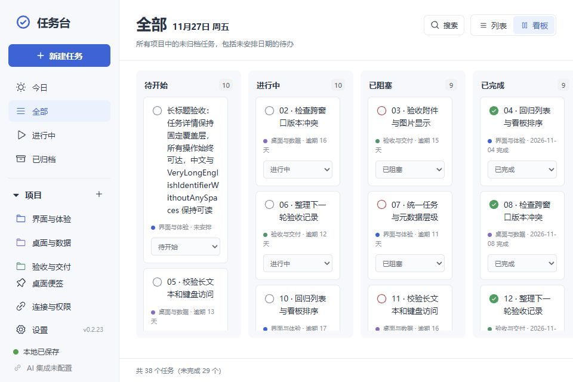

TodoList 整体界面复查
建议优先处理详情的键盘焦点和截止日排序的阅读问题，再收紧窄屏看板与详情的内容占位。
取证来自 9781469 上含 11 月未发布改动的工作树。主窗使用配置中的默认 1360×860 和最小 960×640。两组使用同一份 3 项目、42 任务的合成夹具。浏览器截图的设备像素比为 1。
确认稿与当前界面



| 核对项 | 确认稿 | 实测对照 |
|---|---|---|
| 桌面结构 | 左导航、分组任务行、右详情。 | 项目模式可见分组。打开详情仍使用固定浮层，展开前后底下工作区宽度均为 760px。 |
| 任务选中态 | 淡蓝底加整行细蓝边框。 | 当前为淡蓝底加左侧蓝条。按原稿核对时可恢复整行内描边，验收键盘焦点仍能与选中态区分。 |
| 任务操作 | 参考项目、状态圆圈及右侧内容层级。 | 多选、置顶、时间排序和固定操作区按后续项目决策核对。原图中的「开始任务」与版本状态属历史标注。 |

复现与修改建议
| 位置与证据 | 实际影响 | 建议及复验 |
|---|---|---|
| 详情键盘焦点 浮层位置 · 焦点记录 |
960×640 下用 Enter 打开长标题行，焦点留在列表。连续按三次 Tab，焦点落在浮层遮挡的「取消桌面置顶」，可见区域没有焦点提示。 | 键盘打开详情后把焦点放到标题区，关闭后归还触发行。复验能循序到达详情操作，Tab 不中途落到被盖住的按钮，浮层外的滚轮仍滚动列表。 |
| 截止日排序 全部 · 单项目 |
38 行顺序与真实截止日一致。第 28 项按 11 月 10 日排，行内显示「11 月 8 日完成」。单项目页仍显示「跨项目排序」。 | 截止日模式让已完成行同时可见截止日和完成日。单项目页改为与当前范围一致的提示。复验升降序、未知值置后及两种日期的读法，继续保留已完成标签。 |
| 看板卡片密度 960×640 看板 |
同一长标题从宽屏 5 行增至窄屏 9 行，首卡达 279px，占该列 392px 可见任务区约 71%。右端还有 36px 可横滚，静止时提示弱。 | 窄屏卡片标题收至三行，仍可通过详情读取全文。实际有横向溢出时提示剩余列。复验相同夹具下同列至少可扫读两张卡的标题，拖放和状态选择不受影响。 |
| 详情首屏阅读 宽窗 · 窄窗 |
窄窗中长标签占 183px，描述标题距固定页脚仅 12px，首屏看不到描述正文。代码标识与中文均能折行，详情无横向溢出。 | 建议把状态、优先级、项目留在头部，描述移到长标签之前。标签继续可阅读全文。复验 960×640 打开同任务能直接见描述首句，四个标题动作及页脚位置稳定。 |
| 客户端切换 客户端页 · 手动路径 |
在 Codex 标签按右方向键，选中项仍是 Codex。点 Claude Code 可切换，返回后保留自己的路径草稿。 | 让方向键在客户端标签间移动并显示焦点。复验切换前后的草稿、确认撤销和可用操作仍归属于所选客户端。 |
| 便签长标题 最小便签 |
320px 宽时首条标题文字需要 744px，现有列宽 198px，尾部省略，标题元素也没有全文提示。前缀相同的任务难以区分。 | 保留单行密度，给焦点与悬停提供完整标题。复验仍可访问完成、取消置顶和底部打开任务台。 |


设置在窄窗可滚动到诊断区。可把「网页预览不访问桌面更新源」放在「检查更新」旁，让禁用原因就地可见。编辑器能在日期字段下显示错误并阻止保存，当前没有需要优先修改的表单遮挡问题。
当前截图


2. 四列看板





本轮可复现的交互
- 截止日排序覆盖 38 个未归档任务，时间模式隐藏拖动柄。单项目搜索选中匹配的 6 条，改为无结果后清空选择。手动模式按方向键交换同项目可见行并恢复。
- 看板第一列独立滚动至 640px，另三列为 0。键盘横滚至 36px。鼠标把短标题卡从进行中拖到阻塞，键盘状态选择改回进行中。
- 详情打开时，左区滚轮将列表从 0 滚到 640px，详情仍在 0。点外部区域关闭详情且没有选中底下任务。展开后底下列表宽度仍为 760px。大图中按右方向键切到 2/3，Escape 返回详情。
- 编辑器输入
2026-02-30后标出无效日期，保存时保留编辑器。最小便签的任务区可滚动到底，固定页脚可达。尝试完成带未确认验收标准的任务时出现提示。 - 设置可滚动到诊断区。连接页在窄窗展开手动路径后可滚到操作区，分客户端草稿保留。网页预览的更新检查与配置操作处于禁用状态。
复现可在本工作树用 npm.cmd run dev -- --host 127.0.0.1 --port 5327 --strictPort 启动隔离预览，通过设置导入合成夹具。便签可在同一预览使用 /?mode=sticky。合成夹具 · 测量与交互记录
待选定的改动
建议先确认详情键盘焦点和截止日可见性。看板的标题截取、详情信息顺序、便签全文提示和客户端标签键盘行为列为下一批候选。已确认稿的任务选中边框有独立对照。
本版为复查记录。选定改动后保存相应视觉或交互稿，再用同一夹具、视口和状态进行实现对照。